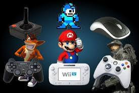
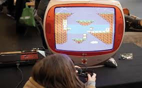

Un videojuego o juego de video es un software o juego electrónico en el que uno o más jugadores interactúan por medio de diversos dispositivos (teléfonos, consolas, computadoras), los cuales muestran imágenes de video. Estos dispositivos, conocidos genéricamente como «plataforma», puede ser una computadora, una máquina de arcade, una consola de videojuegos o un dispositivo portátil, como por ejemplo un teléfono móvil, teléfono inteligente, tableta o una consola de videojuegos portátil. La industria de los videojuegos es un sector en constante crecimiento y se ha convertido en una forma de entretenimiento muy popular a nivel mundial.
Estos dispositivos, conocidos genéricamente como «plataforma», puede ser una computadora, una máquina de arcade, una consola de videojuegos o un dispositivo portátil, como por ejemplo un teléfono móvil, teléfono inteligente, tableta o una consola de videojuegos portátil. La industria de los videojuegos es un en constante crecimiento y se ha convertido en una forma de entretenimiento muy popular a nivel mundial. Las videoconsolas o consolas de videojuegos son aparatos electrónicos domésticos destinados exclusivamente a reproducir videojuegos. Creadas por diversas empresas desde los años 70, han generado un inmenso negocio de trascendencia histórica en la industria del entretenimiento. La videoconsola por antonomasia es un aparato de sobremesa que se conecta a un televisor para la visualización de sus imágenes, pero existen también modelos de bolsillo con pantalla incluida, conocidos como videoconsolas portátiles.

Los orígenes del videojuego se remontan a la década de 1950, cuando poco después de la aparición de las primeras computadoras electrónicas tras el fin de la Segunda Guerra Mundial, se llevaron a cabo los primeros intentos por implementar programas de carácter lúdico. Así, fueron creados el Nimrod (1951) o el Oxo (1952), juegos electrónicos que aún no pueden ser denominados videojuegos, y el Tennis for Two (1958) o el Spacewar! (1962), auténticos pioneros del género. Todos ellos eran todavía prototipos, juegos muy simples y de carácter experimental que no llegaron a comercializarse, entre otras cosas, porque funcionaban en unas máquinas que solo estaban disponibles en universidades o en institutos de investigación. No sería hasta la década de los 70 en que, con la bajada de los costes de fabricación, aparecieron las primeras máquinas recreativas y los primeros videojuegos dirigidos al gran público. Títulos como Computer Space (1971) o Pong (1972), de Atari, inauguraron las primeras máquinas recreativas construidas al efecto, que funcionaban con monedas. Poco después llegarían los videojuegos a los hogares gracias a las consolas domésticas, la primera de las cuales fue la Magnavox Odyssey (1972), y más tarde la exitosa Atari 2600 o VCS (de 1977), con su sistema de cartuchos intercambiables.
